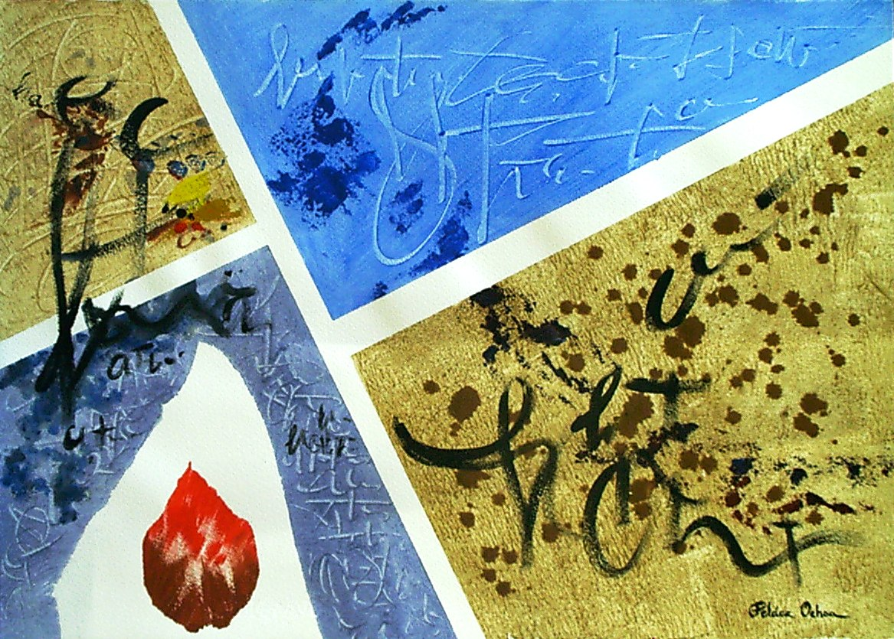

ESTRUCTURA IV Y ESCUADRA
2007 “ESTRUCTURA IV Y ESCUADRA” 70,3×50,5 – PELAEZ OCHOA. ACRYLIC PAINTING ON PAPER. FRAMELESS. SHIPPING COSTS INCLUDED FOR SPAIN AND EUROPEAN UNION. (ASK FOR THE REST OF COUNTRIES)

ESTRUCTURA II
2007 “ESTRUCTURA II” 70,3×50,5 – PELAEZ OCHOA. ACRYLIC PAINTING ON PAPER. FRAMELESS. SHIPPING COSTS INCLUDED FOR SPAIN AND EUROPEAN UNION. (ASK FOR THE REST OF COUNTRIES)
PAISAJE DE LA VALL DE SANTA SUSANNA, MASIA
1996 “PAISAJE DE LA VALL DE SANTA SUSANNA, MASIA” 33×41 – PELAEZ OCHOA. OIL ON CANVAS. FRAMELESS. SHIPPING COSTS INCLUDED FOR SPAIN AND EUROPEAN UNION. (ASK FOR THE REST OF COUNTRIES)

ROCAS EN LA PLAYA DE LLORET
A2017 “ROCAS EN LA PLAYA DE LLORET” 38×46 – PELAEZ OCHOA. OIL ON CANVAS. FRAMELESS. SHIPPING COSTS INCLUDED FOR SPAIN AND EUROPEAN UNION. (ASK FOR THE REST OF COUNTRIES)
ARBOLEDA EN OTOÑO
2014 “ARBOLEDA EN OTOÑO” 35×55,5 – PELAEZ OCHOA. OIL ON WOOD TABLE. FRAMELESS. SHIPPING COSTS INCLUDED FOR SPAIN AND EUROPEAN UNION. (ASK FOR THE REST OF COUNTRIES)

PLAZA DE LA ALBERCA
2012 “PLAZA DE LA ALBERCA” 35×55,5 – PELAEZ OCHOA. OIL ON WOOD TABLE. FRAMELESS. SHIPPING COSTS INCLUDED FOR SPAIN AND EUROPEAN UNION. (ASK FOR THE REST OF COUNTRIES)
RIO QUEROL, LA CERDANYA
2010 “RIO QUEROL, LA CERDANYA” 65×50 – PELAEZ OCHOA. OIL ON CANVAS. FRAMELESS. SHIPPING COSTS INCLUDED FOR SPAIN AND EUROPEAN UNION. (ASK FOR THE REST OF COUNTRIES)

PAISATGE DEL PIRINEU
2008 “PAISATGE DEL PIRINEU” 65×54 – PELAEZ OCHOA. ACRYLIC ON CANVAS. FRAMELESS. SHIPPING COSTS INCLUDED FOR SPAIN AND EUROPEAN UNION. (ASK FOR THE REST OF COUNTRIES)
PORTE PUIMOREN
2006 “PORTE PUIMOREN” 55×46 – PELAEZ OCHOA. OIL ON CANVAS. FRAMELESS. SHIPPING COSTS INCLUDED FOR SPAIN AND EUROPEAN UNION. (ASK FOR THE REST OF COUNTRIES)
ARBRES DE TARDOR
2006 “ARBRES DE TARDOR” 61×46 – PELAEZ OCHOA. OIL ON CANVAS. FRAMELESS. SHIPPING COSTS INCLUDED FOR SPAIN AND EUROPEAN UNION. (ASK FOR THE REST OF COUNTRIES)
PAISATGE DE LA GARROTXA
2006 “PAISATGE DE LA GARROTXA” 33×46 – PELAEZ OCHOA. OIL ON CANVAS. FRAMELESS. SHIPPING COSTS INCLUDED FOR SPAIN AND EUROPEAN UNION. (ASK FOR THE REST OF COUNTRIES)

NACIMIENTO DEL RIO SEGURA
2005 “NACIMIENTO DEL RIO SEGURA” 50×73 – PELAEZ OCHOA. OIL ON CANVAS. FRAMELESS. SHIPPING COSTS INCLUDED FOR SPAIN AND EUROPEAN UNION. (ASK FOR THE REST OF COUNTRIES)

VINIENDO DE ANDORRA
2000 “VINIENDO DE ANDORRA” 65×50 – PELAEZ OCHOA. OIL ON CANVAS. FRAMELESS. SHIPPING COSTS INCLUDED FOR SPAIN AND EUROPEAN UNION. (ASK FOR THE REST OF COUNTRIES)

PAISAJE DE LA GARROTXA
2014 “PAISAJE DE LA GARROTXA” 45,50×45,50 – PELAEZ OCHOA. OIL ON WOOD TABLE. FRAMELESS. SHIPPING COSTS INCLUDED FOR SPAIN AND EUROPEAN UNION. (ASK FOR THE REST OF COUNTRIES)

ESTRUCTURA III Y CARTABON
2007 “ESTRUCTURA III Y CARTABON” 70×51 – PELAEZ OCHOA. ACRYLIC PAINTING ON PAPER. FRAMELESS. SHIPPING COSTS INCLUDED FOR SPAIN AND EUROPEAN UNION. (ASK FOR THE REST OF COUNTRIES)
ESTRUCTURA I
2007 “ESTRUCTURA 1” 70,3×50,5 – PELAEZ OCHOA. ACRYLIC PAINTING ON PAPER. FRAMELESS. SHIPPING COSTS INCLUDED FOR SPAIN AND EUROPEAN UNION. (ASK FOR THE REST OF COUNTRIES)

RAIZ CUADRADA
2004 “RAIZ CUADRADA” 70×51 – PELAEZ OCHOA. ACRYLIC PAINTING ON PAPER. FRAMELESS. SHIPPING COSTS INCLUDED FOR SPAIN AND EUROPEAN UNION. (ASK FOR THE REST OF COUNTRIES)
RECICLATGE SERIGRAFIA
1996 “RECICLATGE SERIGRAFIA” 50,3×35 – PELAEZ OCHOA. ACRYLIC PAINTING ON PAPER. FRAMELESS. SHIPPING COSTS INCLUDED FOR SPAIN AND EUROPEAN UNION. (ASK FOR THE REST OF COUNTRIES)

NO ENCUENTRO LA SALIDA
2004 “NO ENCUENTRO LA SALIDA” 51×70 – PELAEZ OCHOA. ACRYLIC PAINTING ON PAPER. FRAMELESS. SHIPPING COSTS INCLUDED FOR SPAIN AND EUROPEAN UNION. (ASK FOR THE REST OF COUNTRIES)
HAY ESPERANZA
2004 “HAY ESPERANZA” 51×70 – PELAEZ OCHOA. ACRYLIC PAINTING ON PAPER. FRAMELESS. SHIPPING COSTS INCLUDED FOR SPAIN AND EUROPEAN UNION. (ASK FOR THE REST OF COUNTRIES)

DIRECCION I Y II
2004 “DIRECCION I Y II” 24,5×65 – PELAEZ OCHOA. TWO ACRYLIC PAINTINGS ON PAPER. FRAMELESS. SHIPPING COSTS INCLUDED FOR SPAIN AND EUROPEAN UNION. (ASK FOR THE REST OF COUNTRIES)
ANGLES
2004 “ANGLES” 51×70 – PELAEZ OCHOA. ACRYLIC PAINTING ON PAPER. FRAMELESS. SHIPPING COSTS INCLUDED FOR SPAIN AND EUROPEAN UNION. (ASK FOR THE REST OF COUNTRIES)
VEGETACIO
1992 “VEGETACIO” 25×33,5 – PELAEZ OCHOA. IMPRESSED/INSET ON PAPER. FRAMELESS. SHIPPING COSTS INCLUDED FOR SPAIN AND EUROPEAN UNION. (ASK FOR THE REST OF COUNTRIES)
ECOSISTEMA
1993 “ECOSISTEMA” 20×33,3 – PELAEZ OCHOA. IMPRESSED/INSET ON PAPER. FRAMELESS. SHIPPING COSTS INCLUDED FOR SPAIN AND EUROPEAN UNION. (ASK FOR THE REST OF COUNTRIES)

PERPENDICULAR
2004 “PERPENDICULAR” 51×70 – PELAEZ OCHOA. ACRYLIC PAINTING ON PAPER. FRAMELESS. SHIPPING COSTS INCLUDED FOR SPAIN AND EUROPEAN UNION. (ASK FOR THE REST OF COUNTRIES)

ROCAS EN TAMARIU
2006 “ROCAS EN TAMARIU” 50×65 – PELAEZ OCHOA. OIL ON CANVAS. FRAMELESS. SHIPPING COSTS INCLUDED FOR SPAIN AND EUROPEAN UNION. (ASK FOR THE REST OF COUNTRIES)